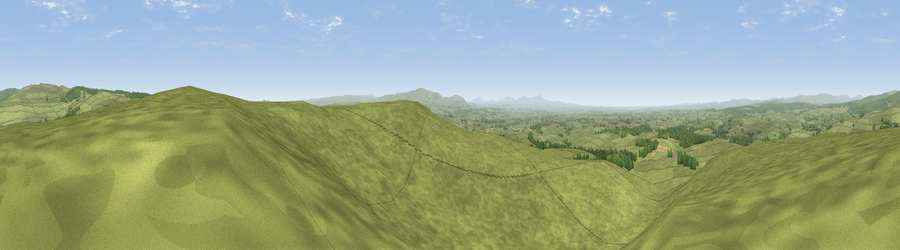

Viewpoint near Bewcastle
#4321 in England · top 7% of its area beats it · near BewcastleThe view, rendered

A 360° render of this exact spot computed from the terrain model, tree cover and land cover — summer colours, afternoon light, calibrated against photographs of famous viewpoints. Real trees, hedges and buildings will differ in detail.
The panorama
Grey silhouette: terrain skyline in each direction (720 bearings, Earth curvature and refraction included). Dashed green: skyline with trees (+15 m) and buildings (+8 m) as obstacles. Blue strip: how far the ground is visible on each bearing.
Where the view opens
Wedge length = distance to the farthest visible ground on that bearing (vegetation-aware). Rings at 10, 25 and 50 km.
What fills the view
93% grassland · 6% woodland ·
Angular shares of the visible panorama (visual magnitude), not map area. Landscape diversity 0.13 (0–1 Shannon).
Key numbers
More beautiful places nearby
The staircase of upgrades: each row has a higher view potential than everything closer. Driving times are estimates from straight-line distance, calibrated against real road routing — check an actual route before setting out.
| Place | Direction | Drive | Score |
|---|---|---|---|
| Viewpoint near Bewcastle | SSE · 0 km | ~2 min | 73.2 |
| Viewpoint near Bewcastle | NNE · 7 km | ~14 min | 78.9 |
| Viewpoint c11644_7156 | N · 10 km | ~19 min | 80.8 |
| Barrock Fell | SSW · 27 km | ~43 min | 81.1 |
| Viewpoint c11995_7247 | N · 28 km | ~44 min | 82.1 |
| Viewpoint near Hepple | ENE · 52 km | ~73 min | 82.4 |
| Viewpoint near Watermillock | SSW · 52 km | ~74 min | 82.6 |
| Viewpoint near Bassenthwaite | SW · 52 km | ~74 min | 82.8 |
55.04312, -2.67171 · source: screening · position refined by local search. Computed location — check access rights before visiting.